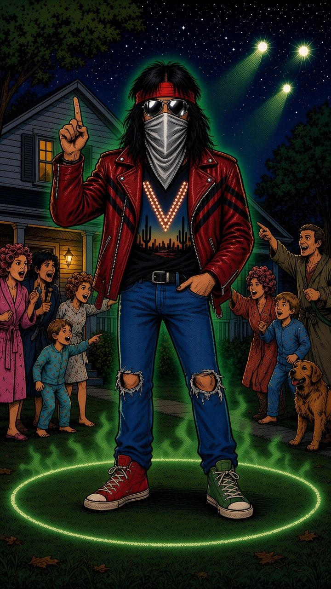

Strange lights, a 30-foot circle and a “50/50” chance · Yorktown, New York*Mostly. Narration is sourced, speech bubbles with his name are his own words, and everything else is a joke.
Swipe, tap or use the arrow keys to read →
“Who knows? You see, I take that in stride, like going down and buying a gallon of milk.”
The sightings found their way into his music: the song “Up in the Sky” on his 2024 album 10,000 Volts was inspired by his close encounters.
Ace Frehley died on 16 October 2025. He left the question open, the way he liked it. Keep watching the skies.
Sources: SPIN: “‘Life Is Funny’: My Conversation With Ace Frehley on February 5, 2024” (Liza Lentini, 21 Oct 2025) · Den of Geek: “Kiss Guitarist Ace Frehley Claims UFO and Ghost Encounters” (Aaron Sagers, 11 Jun 2020, from a 2009 interview), also on Paranormal Pop Culture · Ultimate Classic Rock: “Ace Frehley’s UFO Encounters: ‘The Evidence is Overwhelming’” (4 Apr 2024).
How to read this comic: captions are narration based on the sources above. Speech bubbles with a name under them are his real words, quoted exactly. Bubbles without a name are invented comic dialogue. The neighbours, the pilot, the experts, the hose, the deli and the selfie-taking aliens are jokes. The masked rocker is an invented stand-in, not a likeness of Ace.
A non-commercial fan tribute to Ace Frehley (1951–2025). Not affiliated with KISS. Original art shows no likenesses, makeup designs or logos. All aliens are invented.